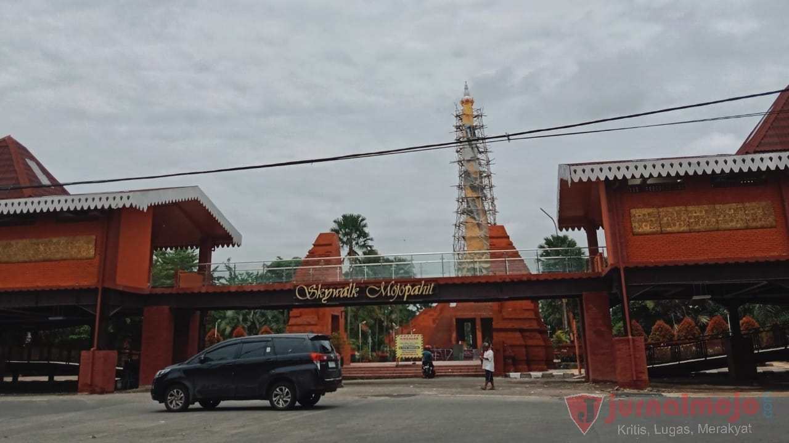
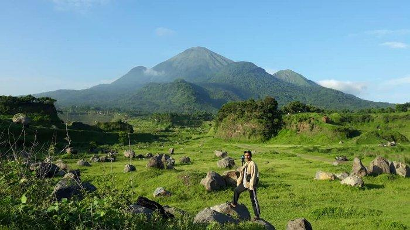
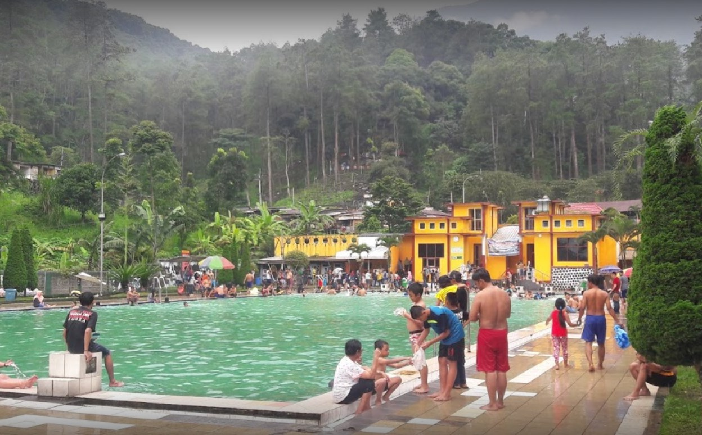

Sejarah

Kabupaten Mojokerto, yang terletak di Provinsi Jawa Timur, Indonesia, memiliki sejarah yang panjang dan bervariasi. Wilayah ini telah menjadi saksi sejarah sejak masa prasejarah dengan penemuan fosil manusia purba di situs Trinil. Selama masa Majapahit, Kabupaten Mojokerto menjadi bagian dari kerajaan Hindu-Buddha yang berkuasa di Jawa Timur. Era kolonial Belanda juga memengaruhi wilayah ini, dengan ekonominya yang mengandalkan produksi pertanian. Setelah kemerdekaan Indonesia, Kabupaten Mojokerto dibentuk pada tahun 1950 sebagai entitas administratif terpisah, dengan Kota Mojokerto sebagai ibu kota. Wilayah ini terus mengalami pertumbuhan ekonomi, perkembangan infrastruktur, dan menjadi tempat dengan warisan budaya dan sejarah yang kaya, yang melanjutkan perannya dalam sejarah modern Indonesia.
Geografis

Kabupaten Mojokerto, terletak di Provinsi Jawa Timur, Indonesia, menawarkan lanskap geografis yang beragam. Wilayah ini memiliki dataran rendah di sebelah utara dan timur, tetapi juga diberkahi dengan perbukitan dan pegunungan yang menghiasi bagian selatan dan tengahnya. Sungai-sungai yang melintasi kabupaten ini, termasuk Sungai Brantas, memiliki peran penting dalam irigasi dan pertanian. Lahan subur di Kabupaten Mojokerto mendukung pertanian yang makmur, dengan produksi padi, tebu, dan sayuran yang signifikan. Selain itu, potensi pariwisata di wilayah ini juga berkembang, memperkenalkan wisatawan pada keindahan alam, warisan budaya, dan keramahan penduduk setempat.
Wisata
beragam destinasi wisata di Kota Mojokerto dapat ditelusuri hingga ke perpaduan alam yang indah dan kaya akan budaya. Terletak di Jawa Timur, kota ini memanfaatkan lanskap yang beragam, termasuk pegunungan, perbukitan, dan sumber air panas alami, seperti Padusan Pacet, untuk menarik pengunjung yang mencari relaksasi dan pengalaman kesehatan. Sejarahnya yang kaya, dengan penemuan fosil manusia purba di situs Trinil dan berbagai warisan budaya lainnya, juga memberikan daya tarik tersendiri. Inisiatif pariwisata yang diterapkan oleh pemerintah setempat dan komunitas lokal melengkapi latar belakang ini, menjadikan Kota Mojokerto sebagai destinasi wisata yang menarik dan beragam.
Candi Bajang Ratu

candi yang tak kalah populer yakni Candi Bajang Ratu. Candi ini sering menjadi tujuan fotografi wisatawan yang datang berkunjung karena bentuknya yang unik.
Berbeda dengan candi lain, Candi Bajang Ratu berbentuk gapura dan dulunya menjadi pintu masuk raja menuju area kerajaan. Di bagian kaki candi ini juga terdapat relief penghormatan terhadap Raja Jayanegara.
Kawasan candi yang luas dan asri juga sering menjadi lokasi piknik rombongan wisata sama seperti Candi Muara Takus di Pekanbaru. Lokasi cagar budaya ini sendiri berada di Jl. Candi Tikus No.9, Pelem, Temon, Trowulan.
Jika Anda tertarik bisa berkunjung antara pukul 08.00 WIB hingga 15.00 WIB setiap harinya. Tiketnya pun sangat murah, untuk anak-anak hanya Rp1.500,00 dan orang dewasa cukup Rp3.000,00.
Padusan Hot Springs

Padusan Pacet di Mojokerto adalah sebuah destinasi wisata alam yang menakjubkan dengan air panas alami yang mengalir di tengah keindahan alam tropis. Tempat ini cocok untuk relaksasi dan penyembuhan tubuh berkat sumber air panasnya yang mengandung mineral. Pengunjung dapat menikmati berbagai fasilitas mandi, seperti kolam renang alami dan bak mandi, sambil menikmati suasana tenang dan damai. Selain itu, Anda juga dapat menjelajahi keindahan alam sekitarnya dengan berjalan-jalan atau trekking. Setelah itu, nikmatilah kuliner lokal yang lezat. Padusan Pacet biasanya buka setiap hari dan harga tiket masuknya bervariasi tergantung pada fasilitas yang Anda gunakan, mulai dari beberapa puluh ribu hingga ratusan ribu rupiah. Pastikan untuk memeriksa informasi terbaru sebelum mengunjungi tempat ini, karena harga dan jam operasional dapat berubah dari waktu ke waktu.